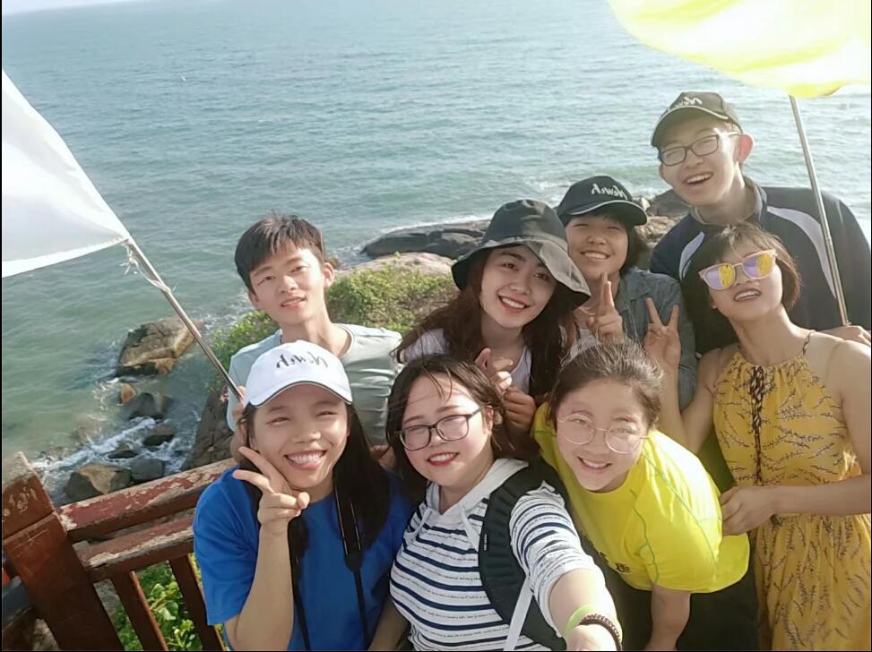

嗨！这是王佳丽的主页！

政治面貌:中共预备党员 出生年月:1998年8月 身 高:163cm
民 族:汉 族 性 别:女 学 历:本 科 健康状况:健康
政治面貌:中共预备党员 出生年月:1998年8月 身 高:163cm
民 族:汉 族 性 别:女 学 历:本 科 健康状况:健康
| 时间 | 母校 | 成就 |
|---|---|---|
| 2005.9-2011.9 | 山西省太原市万柏林小学 |
|
| 2011.9-2014.9 | 山西省太原市万柏林二中 |
|
| 2014.9-2017.9 | 山西省太原市外国语学校 |
|
| 2017.9-现今 | 海南大学应用科技学院 |
十足的吃货一枚
唯有美食不可辜负！

五音不全的音痴
交际圈的Vocal假实力担当！

热衷于旅游
世界辣么大，偶想去瞧瞧！
